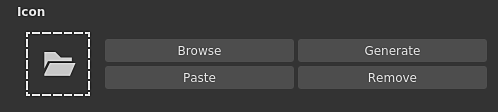

Substance Designer 2020.2 brings a new Substance Engine update, improved workflow for exposing parameters, some performance improvements and new content.
Release date: October 12, 2020
Major Features
New Engine Update (Version 8)
In this new version, the Substance Engine is now in version 8 and brings new functionalities and several improvements:
Default values for input images Image inputs in graph can now define a default color, making it handy to fallback on an appropriate value when nothing is loaded or connected to that input.
New distance modes The distance node has now two new modes which changes the way the computation is done:
Euclidean (original mode): straight line distance between points in Euclidean geometry.
Manhattan: distance between points but constrained on a grid, similar to city blocks.
Chebyshev: maximum distance from the difference of two points on a uniform sized grid.
New gradient interpolation The gradient node has a new mode Smooth to interpolate keys which produces much more natural transitions of colors. It works by looking at neighbour keys. The previous mode Interpolation has been renamed to Flat Tangent.
There is also an additional parameter for the Smooth mode which controls the length of the Tangent used to compute the curve that blends between the colors. A value of 0 means the tangents have a length of 0, while a value or 1 means the tangents will be half of the length between two keys.
Improved Curve Node The curve node can now directly output a grayscale image. This change makes it possible to define a curve and output it directly without the need to plug in a gradient texture first.
The workflow for exposing and editing parameters as been improved to be more straightforward:
Improved menu actionsActions to expose and edit exposed parameters have been separated to be more explicit. New shortcut have also been introduced to more easily and quickly edit exposed parameters. For example there is now a dedicated button to edit the function of a parameter and a dedicated action to jump to the exposed graph parameter.
Configuring new parameter from the dialog directly When exposing a parameter, all the regular controls such as the description and default values are now accessible from the Expose Parameter dialog. This make the configuration and creation of new Graph parameters much easier and faster, avoiding the need to go into the Graph parameter view immediately after creating a parameter.
Improved icon configuration for Substance graph
Setting up thumbnails in Substance graph is now much easier with the improved interface:
Automatic graph thumbnail generation It is now possible to generate automatically a preview for a Substance graph by simply clicking on the Generate button next to the icon in the graph parameters. It currently only supports graph using the Metallic/Roughness PBR workflow as output nodes. When generating the thumbnail the displacement intensity is computed from the Physical Size value if defined, otherwise it defaults to a value of 0.1.
Adding custom thumbnails with the new buttons We added several new button to simplify the setup of custom thumbnails:
Browse: Open a file dialog to load an image. Can also be done by clicking on the folder icon next to the buttons.
Generate: See the demonstration just above.
Paste: Load an image from the clipboard.
Remove: Remove the currently assigned image for the icon.

Improved Performances
Two new optimisations have been made in this new release that reduce time between iterations:
Improved graph computation performance Output nodes are now directly computed when requested instead of computing the intermediate nodes on the way (which is now in a second step). This change allow to preview the results of a graph much more quickly even when tweaking root nodes. In the comparison below, the this optimisation allows to see more iterations of the graph in the same time period (here with a material at a 4K resolution):
Improved Bakers dilation and diffusion generation Generating dilation and diffusion of baked textures is now up to 4 times faster than in previous versions. This reduce the waiting time between bakes.
New Content
This release see this addition of a few new nodes as well as additional possibilities on some already existing ones:
New Threshold filter This node allows to quickly isolate as a black and white mask some part of an image based on a grayscale input. This is similar in practice to the already existing Histogram Scan filter, but more convenient to use on a day to day basis. Find out more about it with the dedicated documentation page.
New Cross Section filter This node allows to visualize the shape of a grayscale input as a profile, making creating heightmap and shapes much easier with this filter as a debug tool. For more information take a look at the dedicated documentation page .
Improved Tile Generator and Tile Sampler These two nodes now have new parameters to expand further capabilities and usages:
Keep ratio: Keep the ratio of the tiles, no need to compensate manually the size when the count on the X and Y axis is uneven.
Absolute: Keep the tile a predefined percentage of the final image’s width.